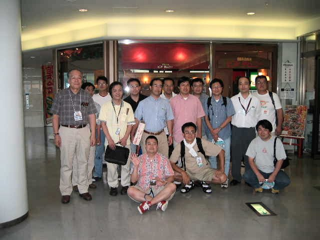
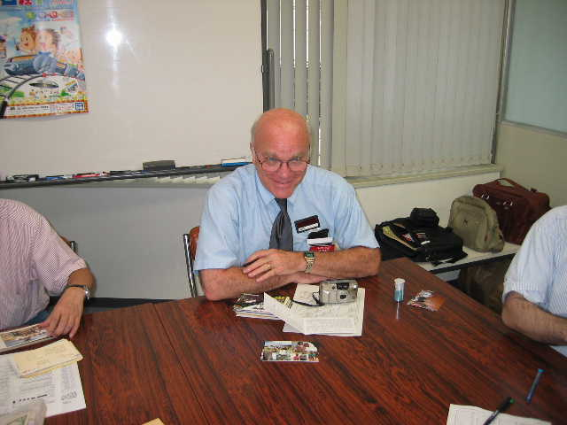

|
Flash ! DX
6m Today
|
Ham Fair 2003

[Back Issues Aug.2003]
TIME:UTC(JST-09:00)
Report from JA1RJU (PM95sq)
31.Aug.2003(15:00d)
*VK-TV 04:20- 46.172 --
*BY-TV 05:00- 49.750 --
*VK-TV 05:30- 46.240 --
*VK-TV 09:20- 46.172 --
VK6RSX 09:30- 50.304 CW Beacon
VK8MS 11:20 50.110 CW/SSB
30.Aug.2003(15:00b)
29.Aug.2003(15:00c)
*VK-TV 05:30- 46.172/240 -- weak
28.Aug.2003(15:00c)
*VK-TV 06:00- 46.172 --
*BY-TV 07:00- 49.750 --
27.Aug.2003(15:00c)
◎ "ハムフェア"以来、引き続き受信リポートを休んでいる訳ではない。
6mのコンデションは落ち込んだまま。終日、大陸方面のTVもまともに入感してこない。
|
26.Aug.2003(15:00c)
*9M-TV 09:00- 48.240/260 --
25.Aug.2003(15:00b)
*BY-TV 12:00- 49.750 --
24.Aug.2003(15:00a)
◎ 「ハムフェア2003」も今日で終了。大混雑した初日23日(土)とは打って変わって、
2日目の日曜日はゆっくりブースに立ち止まれるほど空いていた。
JARLの発表によると、2日間の来場者はのべ28,000人(23日=17,000人、24日=11,000人)だった。
昨年から開催期間が2日間に短縮され、主だったミーティングは土曜日の午後に集中したため、
"掛け持ち参加"のメンバーは大忙しだった。
|

6m有志によるMeeting(8/23日=有明フロンティアビル2F)
23.Aug.2003(00:00a)
◎ 8月23日(土)、24日(日)の2日間、東京・有明の東京ビッグサイトで「ハムフェア2003」が開催。
この間の受信リポートはお休みします。
|
22.Aug.2003(15:00c)
*BY-TV 23:00- 49.750 --
◎ いよいよ明日(23日)から「ハムフェア2003」が東京・有明の東京ビッグサイトで開催される。
今年もDXCCのフィールドチェックが会場で行なわれるが、
今回はARRLからMembership Service Department ManagerのN7NG・ウエイン・ミルズ氏が来日、
JARLのフィールドチェッカーの補佐をする。
これに先立ち、今年もハムフェア前日の22日(金)にJARL事務局3階会議室でDXCCの申請受付・フィールドチェックが行なわれた。
10:00-12:00時の午前中は、受付直後に約50局を超える申請者が訪れていた。
この日のチェックはN7NG(Wayen)、JA1DM(海老沢)両氏がQSLのチェックをスピーディーに処理していた。
JARL事務局での受け付けは13:00-15:00時の2回行なわれた。23日(土)、24日(日)のハムフェア会場でのDXCCデスクでの受付は、
10:00-12:00時、13:00-16:00時に行なわれる。なるべく多くの局に申請の機会を与えるために、
今回申請できるQSLカードは、エンドーズメント60 QSOが限度となっている。
|

DXCCフィールドチェックで来日したN7NG・Wayen
21.Aug.2003(15:00d)
*9M-TV 07:00- 48.240/260 --
9M2TO/B 07:50- 50.005 CW Beacon
*VK-TV 09:00- 46.172 -- weak
VK4FNQ 09:11 50.110/130 SSB
VK8RAS 09:15- 50.047 CW Beacon
VK4RTL 09:15- 50.088 CW Beacon
VK6RSX 09:15- 50.304 CW Beacon
DU1EV/B 09:45- 50.008 CW Beacon
VK4FNQ 09:55 50.110/130 SSB
VK6RSX 10:00- 50.304 CW Beacon strong!
DU1/N6HPX 10:08 50.110/125 SSB
|
◎ 早朝に聞こえていた49.750MHzも下降、日中は大陸方面の49/48MHz帯のTVは入感していない。
夕方から48MHz帯の9M-TVと共に9M2TO/Bが入感してきた。夜になってVK'sのBeaconが強力。
|
20.Aug.2003(15:00e)
*VK-TV 01:30- 46.172 --
*BY-TV 03:30- 49.750 --
*9M-TV 05:00- 48.240/260 --
VK8RAS 06:00- 50.047 CW Beacon
VK4AHW 06:12 50.110/120 SSB
VK4RTL 07:00- 50.088 CW Beacon
VK4CXQ 07:34 50.110 CW
VK8RAS 09:00- 50.047 CW Beacon
VK4RTL 09:00- 50.088 CW Beacon
VK4FNQ 09:05 50.110/130 SSB
VK4CXQ 09:12 50.110 CW
VK4ABP 09:15- 52.347 CW Beacon
VK4FNQ 09:45 50.110/130 SSB
VK6RSX 09:55- 50.304 CW Beacon
19.Aug.2003(15:00c)
|
◎ 今日は終日大陸方面の49/48MHz帯のTVも入感しない静かな6mバンド。
|
18.Aug.2003(15:00d)
*BY-TV 23:00- 49.750 --
*VK-TV 06:30- 46.172 --
VK6RSX 09:30- 50.304 CW Beacon
VK8RAS 09:30- 50.047 CW Beacon
17.Aug.2003(15:00c)
*BY-TV 23:00- 49.750 --
DS5JQK 01:20 50.135 SSB/CW
16.Aug.2003(15:00e)
*BY-TV 23:00- 49.750 --
6L0NJ/4 00:07 50.110 SSB (QTH=IOTA AS-060)
BN0F 01:53 50.115 CW
JD1BKZ 01:54 50.240 SSB
JD1YAB 01:57 50.168 SSB strong!
BN0F 02:00 50.115 SSB
*VK-TV 02:10- 46.172 --
VK4CXQ 02:10 50.110 CW
*9M-TV 02:45- 48.240/260 --
*VK-TV 03:30- 46.172 -- again
BN0F 05:40 50.115 CW
KG6DX 06:20 50.110/115 SSB
VK6RSX 06:55- 50.304 CW Beacon
VK6RSX 09:30- 50.304 CW Beacon
VK6JQ 10:01 50.110 CW strong!
15.Aug.2003(15:00d)
*BY-TV 23:30- 49.750 --
*VK-TV 07:00- 46.172/240 -- weak
VK8RAS 07:15- 50.047 CW Beacon
*9M-TV 08:00- 48.240/260 -- strong!
JD1YAB 08:10 50.289 SSB strong!
VK6RSX 08:50- 50.304 CW Beacon
VK6RSX 09:50- 50.304 CW Beacon strong!
6L0NJ/4 12:05 50.100 CW
6L0NJ/4 14:05 50.105 CW QSL via DS4AEN
14.Aug.2003(15:00d)
*BY-TV 23:00- 49.750 --
*9M-TV 00:30- 48.240/260 --
DX1F 00:57 50.115 CW QSL via JA1HGY
DX1F 01:18 50.115 SSB (OP DU1ZV/JA1BRK)
HL4CEL 01:25 50.106 CW
DS1CCU 01:30 50.112 CW
DS1CCU 02:30 50.115 CW
DS4DBF 02:38 50.110 CW
DS1CCU 03:31 50.130 SSB
*VK-TV 06:55- 46.172/240 --
VK6RSX 06:55- 50.304 CW Beacon
*9M-TV 12:00- 48.240/260 --
(4S7JAG 12:27 50.100 CW into JA7=QSL via JA6EV)
DS5JQK 13:09 50.115 CW
13.Aug.2003(15:00d)
*BY-TV 00:00- 49.750 --
BG9BA 01:17 50.110 CW
BG9BA 02:00 50.110 CW
DS1CCU 02:10 50.118 CW
BG9BA 02:58 50.110 CW
*VK-TV 06:30- 46.172 --
FK8SIX/B 06:50- 50.0794 CW Beacon (FSK)
VK4RGG 07:05- 50.058 CW Beacon
VK8RAS 07:50- 50.047 CW Beacon
VK4FNQ 07:58 50.110/130 SSB
VK4JSR 08:07 50.110 SSB
FK8SIX/B 08:10- 50.0794 CW Beacon
VK4RGG 08:10- 50.058 CW Beacon
VK8RAS 08:10- 50.047 CW Beacon
C21SIX/B 08:35- 50.038 CW Beacon weak
*VK-TV 13:00- 46.172 -- evening TEP
|
◎ 暦の上ではもう秋、"短い夏"の今年は早くも6mのコンデションに秋の気配？。
午後から南太平洋、VK's方面のビーコンが強力に入感していた。
|
12.Aug.2003(15:00c)
*BY-TV 00:00- 49.750 --
BV2NT 09:29 50.110 SSB
11.Aug.2003(15:00d)
*BY-TV 00:00- 49.750 --
DS5ISO 02:44 50.110 CW
JD1YAB 03:20 50.145 CW
(KG6DX 11:03 50.110 CW)
(H40V 11:50 50.110 CW QSL via JA1PBV)
(VK6JQ 11:55 50.110 CW)
10.Aug.2003(15:00c)
*BY-TV 00:30- 49.750 --
09.Aug.2003(15:00e)
*BY-TV 00:00- 49.750 --
VK4RTL 06:00- 50.088 CW Beacon
VK4JH 06:05 50.110/140 SSB
VK4FNQ 06:09 50.110/130 SSB
VK4RTL 07:30- 50.088 CW Beacon again
VK4RTL 09:00- 50.088 CW Beacon
VK6RSX 09:15- 50.304 CW Beacon
|
◎ 大型台風10号は本土上陸後は弱まりながらスピードを上げ、北陸地方から東北地方を通過、
北上している。
再接近したお昼前後に強風圏にすっぽり入っていた関東地方は、内陸部を中心に強風と豪雨による被害が出た。
06:00z頃からVK4'sが強力に入感、1エリアではVK4RTLのBeaconが久しぶりに連続的に聞こえていた。
|
08.Aug.2003(15:00c)
*BY-TV 00:00- 49.750 --
BG9BA 01:23 50.110 CW
DS5ISO 01:39 50.110 CW
|
◎ 大型台風10号はスピードを落とし、四国沖を通過、近畿方面から本土縦断の最悪のコースを辿っている。
関東地方では予想より遅れ、週末一杯は台風の影響を受けそう。
いまの6mではDX入感も期待出来ないが、"クランクダウン"したアンテナではワッチも"開店休業"。
|
07.Aug.2003(15:00c)
*BY-TV 00:00- 49.750 --
*9M-TV 04:30- 48.240 --
|
◎ ようやく梅雨明け宣言がされたのも"つかの間"、早くも大型台風10号が沖縄・奄美を直撃、
本土縦断のコースを伺っている。関東地方には明後日の昼過ぎに最接近が予想されている。
大型のアンテナが上がっている局はご注意。
|
06.Aug.2003(15:00c)
*BY-TV 00:00- 49.750 --
*9M-TV 03:30- 48.240/260 --
DU1EV/B 03:30- 50.008 CW Beacon
VK6RSX 10:24- 50.304 CW Beacon
05.Aug.2003(15:00d)
*BY-TV 00:00- 49.750 --
*9M-TV 04:00- 48.240/260 --
DS1PCF 05:54 50.110 CW
H44V 10:55 50.110 CW QSL via JA1PBV
6K2DHP 12:00 51.000/080 FM
04.Aug.2003(15:00c)
*BY-TV 00:00- 49.750 --
03.Aug.2003(15:00c)
*ZL-TV 06:00- 45.240/260 -- weak
*VK-TV 06:00- 46.172 -- strong!
02.Aug.2003(15:00c)
*BY-TV 23:00- 49.750 --
*VK-TV 08:30- 46.172 -- weak
VK4RTL 08:30- 50.088 CW Beacon
|
◎ 関東、甲信と南東北地方もようやく梅雨が明けた。関東地方の8月に入っての梅雨明けは、
気象庁観測以来2番目に遅い記録とか。夕方に短いVK4の入感があったが、DXシーズン到来にはまだまだ遠い。
北米東南部を賑わしていたCY9AのDX-Peditionは、結局西海岸までのパスが無いまま今日でQRTした。
◎ JY9NX is now QRT
ヨルダン(Jordan)からJY9NXのコールサインでアクティブにQRVし、
多くのJA局に6mで"New One"をサービスしてくれた田原さんが、去る7月28日に約5年間の現地での勤務を終えQRTした。
ヨルダン滞在中はHF帯はもちろん6mやサテライトでもアクティブで、中でもメジャーなDXコンテストでは記録的な活躍をしている。
滞在期間中に6mのDXCC、5Band DXCCなども完成、QSO数は150,000を記録したとの事。
勤務の都合とは言えJY9NXのようなアクティブ局がQRTしてしまうと、6mのコンデションの下降に"拍車"を掛けてしまうので残念。
帰国された田原さんはJM1CAXのコールサインでQRVするが、JY9NXのQSLは今後もJH7FQKが担当する。
詳細はJY9NX WEB参照。長い間ご苦労様でした。
|
01.Aug.2003(15:00c)
*BY-TV 01:00- 49.750 --
|
◎ 関東地方は遂に梅雨が明けないまま8月を迎えてしまった。
コンデションも午後には49.750MHzのTVも入感しなくなるほどEsの発生が弱くなっていた。
|